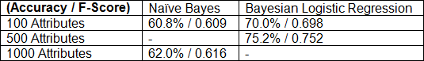

Our objective is to use machine learning to train a model with roughly 15,000 CTECs scraped directly from CAESAR. Our goal is to draw a correlation between the contents of CTECs and how good they are.
Summary We were interested in seeing how we could use the power of machine learning to sift through CTECs. Currently, there is an enormous corpus of data from CTECs, which includes scores, student feedback, and metadata. We hope that by using the correct machine learning algorithms, we can spot words that are predicative of high CTEC scores. Our attributes are created using a bag of words of size 1000, where half the words comprise the most common words found in CTECs, and the other half comprise names of professors. Our input is a list of those 1000 attributes, where the value is 1 if it exists and 0 otherwise. For our learner, we used a Bayesian Logistic Regression algorithm. We got the best result from this, likely because Bayesian techniques work well for problems involving bags of words and logistic techniques work well for situations where each attribute may or may not contribute a small amount in predicting the final output (but many attributes may be accurate in aggregate). We tested and trained our data using Weka. Using a data scraper created by another classmate, Al Johri, we scraped Northwestern’s CTEC database for all CTECs related to the EECS department. We used that data to create a dictionary mapping to the aforementioned bag of words, and used that to generate a bag for each CTEC, outputting our final results in Weka’s ARFF format. Our “class” was whether or not the instructor score for the CTEC was above or below a 5 (we will elaborate more on that later). We measured our success in terms of maximizing accuracy and f-score, using the ZeroR classifier as a baseline. Our final classifier had both an accuracy and f-score of 77.7 percent and 0.777, respectively, which is not too bad compared to our ZeroR baseline accuracy of 55 percent. Furthermore, we were able to create a list of words and professor names, as well as their correlations with CTEC scores. Although this is far from conclusive, we believe our results show that these trends do exist.
Final Report
Introduction Our original idea was to take words from CTECs and feed them in a bag of words fashion to a neural network in order to actually predict the instructor CTEC score. Because the scraping tool was already created for us by Al, we simply pulled all EECS-related CTECs in the database. We ended up scraping CTECs that were not related to EECS as well, but we ended up keeping them, since we felt it would increase the robustness of our algorithm. Our original scraped data came in the form of data in a MongoDB, which we soon transferred to a CSV file, where each row was a CTEC and the columns stood for various attributes, including scores, Professors, course times, and the CTEC reviews themselves.
Procedure We started by looking into PyBrain, since our original plan was to use neural nets. However, we eventually decided to use Weka because of how flexible it was. The first thing we tried was a bag of size 5000. It became clear that no matter what we did, this would not have been tractable because Weka kept running out of memory. For what it was worth, we were running roughly 15k examples with 5000 attributes per example, so it is easy to see how that could have been overwhelming. We then tried 1000, 500, and 100 attributes, and we felt that 500 was a good compromise for the algorithms we were using. Along the way, we decided to drop neural nets and do a nominal classification-based approach, as this seemed to be much more tractable. For the aforementioned cases, we tried doing both naïve bayes and baysian logistical regression. Instead of trying to predict CTEC scores as our class, we decided to split CTECs into two classifications, CTECs with an instructor score of above 5, and those with an instructor score of below 5. The reason, we believe, is that a score of 5 split the CTECs in half, and thus it was more or less the median value. Although the true “half” score of CTECs is 3, as the scale is out of 6, we felt that letting 5 be the dividing line was allowable. After all, if 5 is the median CTEC score given by students, is it completely wrong to say that CTECs above 5 are “good”, and ones under 5 are "not as good" (from a performance standpoint)? By using a nominal classification, we were able to do naïve bayes and baysian logistical regression. We sum up our results in the following table:  Note that at this stage, we were only looking at words in the CTEC reviews, not professors. We opted not to try Naïve Bayes for 500 attributes because we felt it would not have outperformed Bayesian Regression, and we did not try Regression for 1000 attributes because we ran into memory issues again. Thus, we decided to use 500 attributes and Baysian Logistic Regression. It was at this time that we also opted to add professors in. Before, we were drawing words into our bag by pulling the most common words from CTEC reviews, but we added 500 professors to the bag explicitly by searching through the CTECs and adding the 500 most commonly review professors as keys in the bag, expanding our bag to size 1000 anyways. We were able to make this work by giving Weka access to a larger heap.
Results and Analysis Our final model was as such: The input is 14811 examples, each with 1000 nominal attributes. Our class is a nominal attribute signifying whether the CTEC instructor score is above 5 or below 5. We used Bayesian Logistic Regression to draw relationships between the two, and ended up with a model with an accuracy of 77.7 percent and an f-score of 0.777 (compare to ZeroR accuracy, 55 percent). Our data is made available in the plots above. The y-axis shows the coefficiant for each word/professor. Positive coefficients signify that a word or professor’s presence in a CTEC makes it more likely that CTEC will have an instructor score greater than 5, and vice versa. We will summarize some important takeaways: Words associated with lower CTEC scores are generally what you would expect:
- "worst" (-1.111)
- "waste" (-0.683)
- "boring" (-0.635)
- "guest" (-0.567) (perhaps referring to classes with a lot of guest lecturers?)
- "labs" (-0.508) (no doubt, labs are a frustrating part of any class they are in)
- "distro" (-0.385) (students who take classes as distros are probably not nearly as interested in them)
- "awesome" (0.696)
- "excellent" (0.626)
- "amazing" (0.623)